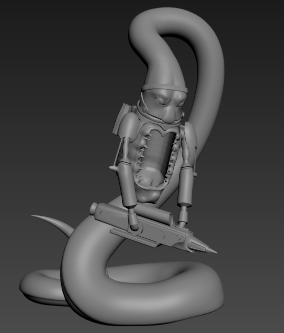
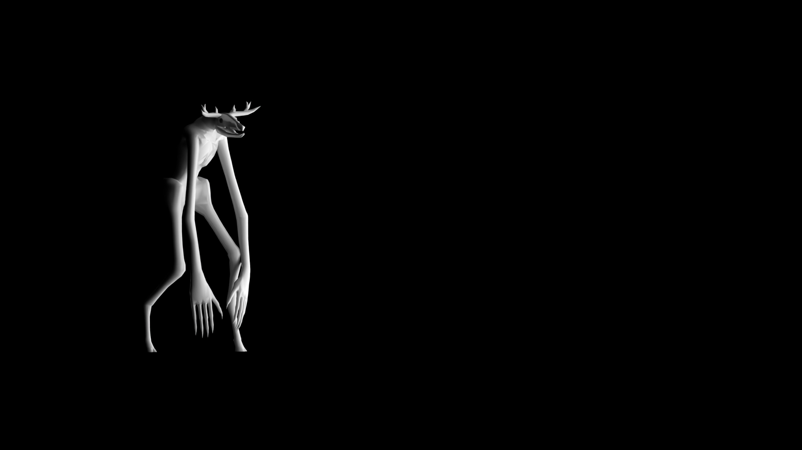

Autumn Ryan | 3D Art
Home ContactMiscellaneous
Snake Man
A high-tech soldier of an ophidian race, based on one of my dad's old drawings. 46,987 polys, modeled in 3D Studio Max. Concept by Joseph Ryan.
Room Renders
Modeled and rendered in Maya. Blue triangle texture sourced form architextures.org


Low-Poly Skinwalker
Modeled in 3D Studio Max.
